금속재료시험기능사 (2001-07-22 기출문제)
1과목: 금속재료일반
1. 동일한 조건에서 열전도율이 가장 큰 것은?
- Zn
- Fe
- Ag
- Pb
(정답률: 61%)

2. 다음 중 퀴리점이란?
- 동소변태점
- 결정격자가 변하는 점
- 자기변태가 일어나는 온도
- 입방격자가 변하는 점
(정답률: 91%)
3. 용융점이 419 ℃이고 비중이 7.1 로써 철강재료의 피복용으로 사용되는 것은?
- 아연
- 구리
- 납
- 철
(정답률: 49%)
4. 조밀육방격자의 표시로 맞는 것은?
- FCC
- BCC
- HCP
- BCT
(정답률: 87%)
5. 단조나 압연을 하여 가공경화한 금속재료를 고온으로 가열할 때 일어나는 현상이 아닌 것은?
- 내부 응력의 제거
- 결정입자의 저지
- 재결정
- 연화
(정답률: 49%)
6. 상온에서 순철의 결정구조는?
- 면심입방격자
- 정방격자
- 조밀육방격자
- 체심입방격자
(정답률: 59%)
7. 펄라이트에 대한 설명 중 맞는 것은?
- 베타(β)철과 시멘타이트와의 기계적 혼합물이다.
- 마텐자이트와 페라이트와의 공석정이다.
- 오스테나이트와 시멘타이트와의 공석정이다.
- 페라이트와 시멘타이트와의 공석정이다.
(정답률: 69%)
8. 금속에 산화물이 형성될 때 용적비의 식에서 D는? (용적비= Md/mD )
- 금속의 밀도
- 산화물의 밀도
- 산화물의 분자량
- 금속의 원자량
(정답률: 35%)
9. 탄소강이 갖는 원소의 주 성분은?
- 납과 규소
- 규소와 주석
- 황과 구리
- 철과 탄소
(정답률: 59%)
10. 암모니아 가스 분해와 질소의 내부확산을 이용한 표면경화법은?
- 고체 침탄법
- 질화법
- 염화바륨법
- 염욕법
(정답률: 90%)
11. 주철에서 백선화 촉진원소가 아닌 것은?
- Mo
- Cr
- Mn
- Si
(정답률: 53%)
12. 다음 특수강 중 저 망간강은?
- 자경강
- 스테인리스강
- 듀콜강
- 고속도강
(정답률: 59%)
13. 개량처리하여 실용화하고 있는 실루민의 합금은?
- Mo-Pb
- Cu-P
- Aℓ-Si
- Fe-Mn
(정답률: 86%)
14. 해드필드 강(hadfield steel)은?
- 페라이트계 고 니켈강이다.
- 오스테나이트계 고 망간강이다.
- 펄라이트계 고 크롬강이다.
- 펄라이트계 저 니켈강이다.
(정답률: 52%)
15. 구리에 대한 설명 중 옳지 않은 것은?
- 내식성이 있어 선박용으로 사용된다.
- 열과 전기의 전도율이 높다.
- 용해하기가 다른 금속에 비해 아주 용이하다.
- 상온에서 결정구조는 면심입방격자이다.
(정답률: 50%)
16. 치수 숫자와 같이 사용하는 기호 중 판의 두께를 나타내는 것은?
- ø
- □
- t
- R
(정답률: 75%)
17. KS 부분별 기호 중 금속 부분은?
- KSA
- KSB
- KSC
- KSD
(정답률: 70%)
18. 제도에 물체 형상의 일부분을 생략하여 자르는 경우나 부분 단면의 경계를 나타내는 선은?
- 1점 쇄선
- 파단선
- 가상선
- 2점 쇄선
(정답률: 62%)
19. 물체의 높이를 알 수 없는 투상도는?
- 평면도
- 정면도
- 측면도
- 배면도
(정답률: 79%)
20. 아래 물체에 표시된 점을 투상면에 옳게 나타낸 것은? (단, 화살표 방향을 정면으로 함)
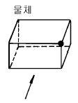
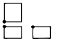
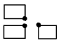
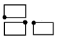
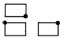
(정답률: 87%)
2과목: 금속제도
21. 단면에 해칭(hatching)을 할 때는 단면의 주된 중심선 또는 단면도의 외형선에 대하여 몇 도 경사진 어떤 선으로 긋는가?
- 15° 경사진 굵은 실선
- 45° 경사진 가는 실선
- 60° 경사진 은선
- 60° 경사진 가상선
(정답률: 88%)
22. 다음과 같은 물체의 테이퍼 값은?
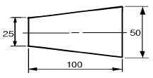
- 1/5
- 1/8
- 1/4
- 1/25
(정답률: 57%)
23. 물체 표면의 줄무늬 방향의 기호 중 줄무늬가 여러 방향으로 교차하거나 또는 무방향일 때 표시하는 기호는?
- M
- X
- C
- R
(정답률: 44%)
24. 아래치수 허용차가 0 이 되는 구멍 부호는?
- E
- H
- M
- P
(정답률: 42%)
25. 기계재료 가공법의 기호 중 단조를 뜻하는 것은?
- P
- C
- D
- F
(정답률: 31%)
26. 나사 표시 "M10 - 2/1" 에서 숫자 2가 뜻하는 것은?
- 암나사의 종류
- 수나사의 종류
- 암나사의 등급
- 수나사의 등급
(정답률: 50%)
27. 도면에서 표제란의 원칙적인 위치는?
- 왼쪽 위
- 왼쪽 아래
- 오른쪽 위
- 오른쪽 아래
(정답률: 80%)
28. 결정입도 판정에 있어서 종합 판정법에 의한 평균 입도번호는? (아래 표와 공식 m=∑ab/∑b을 참조)
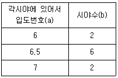
- 6.0
- 6.5
- 7.0
- 7.5
(정답률: 39%)
29. 전단탄성계수(또는 강성계수)는 어떤 시험으로 측정하는가?
- 인장 시험
- 비틀림 시험
- 압축 시험
- 크리프 시험
(정답률: 55%)
30. 미세한 입상탄화물이 밀집된 것 같으며 낮은 배율로는 검게 보이고 현미경으로 약 400 배 이상에서 볼 수 있는 조직은?
- 마텐자이트
- 솔바이트
- 베이나이트
- 시멘타이트
(정답률: 54%)
31. 탄소강의 구상화 풀림 열처리와 관계없는 것은?
- 망상 시멘타이트를 구상화 시킨다.
- 담금질 균열을 방지한다.
- 저탄소강에서 행하여진다.
- 담금질전 예비처리로 행한다
(정답률: 34%)
32. 잔류 오스테나이트를 감소시켜 기계적 성질을 양호하게 하는 열처리는?
- 용체화 처리
- 항온 변태 열처리
- 영점하 처리
- 시효 처리
(정답률: 10%)
33. 기호 AGC는 무엇을 의미하는가?
- 침탄입도시험방법
- 경화능시험방법
- 산화방지법
- 담금질, 풀림방법
(정답률: 48%)
34. 가공방향으로 집단을 이루며 입상의 알루미늄 산화물계 개재물이 불연속적으로 뭉쳐있는 것은 비금속 개재물의 분류상 어디에 속하는가?
- A형 개재물
- B형 개재물
- C형 개재물
- D형 개재물
(정답률: 44%)
35. 철강재료의 부식용액으로 적합한 것은?
- 염화 제 2철 5gr + 진한염산 50cc + 물 100 cc
- 질산 50cc + 초산 50 cc
- 수산화나트륨 20 gr + 물 100 cc
- 진한질산 5 cc + 알콜 100 cc
(정답률: 48%)
36. Ni-Cr 등에 나타나는 것으로 수소에 의하여 생기는 결함은?
- 백점
- 표면결함
- 수축공
- 탕경계
(정답률: 40%)
37. 강재 중 황의 분포상태와 흠을 간단히 검출하는 방법은?
- 설퍼 프린트법
- 매크로 조직법
- 파단면 검사법
- X선 투과법
(정답률: 59%)
38. 철강의 파단면 검사법의 목적이 아닌 것은?
- 열처리의 적부
- 파단면의 상태
- 피로파괴와 과열 여부
- 내,외부결함의 판정 및 성분의 판별
(정답률: 47%)
39. 만능시험기(universal testing machine)로 시험할 수 없는 것은?
- 인장과 압축
- 충격과 경도
- 굽힘과 전단
- 압축과 전단
(정답률: 27%)
40. 피로시험에서 S-N 곡선이란?
- 파괴와 응력
- 스트레인과 노치횟수
- 온도와 성분
- 피로응력과 반복횟수
(정답률: 58%)
3과목: 금속재료조직 및 비파괴시험
41. 샤르피 충격시험기에서 20 이라는 충격값을 얻었을 때의 단위는?
- kg
- kg/mm2
- kg·m/sec
- kg·m/cm2
(정답률: 30%)
42. 금속재료의 연신율을 측정하는 것은?
- 암슬러식
- 로크웰
- 샤르피
- 쇼어
(정답률: 35%)
43. 쇼어경도계의 특징이 아닌 것은?
- 시험기가 경사가 조금이라도 진다면 관사이의 마찰로 정확한 경도값을 얻을 수 없다.
- 시험편이 얇은것 또는 작은것도 측정이 가능하다.
- 재료나 제품에 직접 시험을 하기는 곤란하다.
- 운반이 용이하고 시험을 간단히 할 수 있다.
(정답률: 41%)
44. 비커스 경도시험에서 시험온도(℃)범위로 적당한 것은?
- 0 이하
- 18∼22
- 76∼80
- 100 이상
(정답률: 69%)
45. 비커스 경도계의 특징 중 틀린 것은?
- 하중을 임의로 변화시킬 수 있다.
- 얇은재료의 경도인 침탄층의 경도도 측정할 수 있다.
- 단단한 재료는 측정이 가능하나 연한 재료의 측정은 불가능하다.
- 압입자는 꼭지 대면각이 136°되는 사각뿔인 다이아먼드로 되어 있다.
(정답률: 40%)
46. 현장에서 대물의 경도 측정시 제품에 거의 흔적을 남기지 않는 가장 편리한 경도계는?
- 브리넬 경도계
- 로크웰 경도계
- 쇼어 경도계
- 비커스 경도계
(정답률: 43%)
47. 브리넬 경도를 표시한 식은? (단, F:시험하중(㎏f), D:누르개의 지름(mm), d:오목부의 지름(mm), h:누르개의 반동높이(mm), ho:누르개의 원높이(mm) )
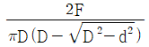
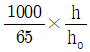
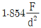
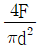
(정답률: 50%)
48. 다음 X-선 사진에서 용입부족에 의한 결함부분은?
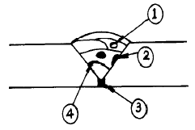
- ①
- ②
- ③
- ④
(정답률: 35%)
49. 방사선의 양을 나타내는 단위는?
- 뢴트겐, 라디안
- 데시벨, 시알티
- 스키머, 짐머
- 진자, 투시건
(정답률: 35%)
50. 초음파 탐상 검사장치에 사용되지 않는 것은?
- 증폭기
- 탈자기
- 탐촉자
- 발진기
(정답률: 40%)
51. 강의 용접부의 결함시험에 적합한 비파괴시험법은?
- 매크로시험
- 크리프시험
- 경도시험
- 방사선 투과시험
(정답률: 19%)
52. 피검사물의 구멍을 통한 도체의 전류를 흐르게 하는 자화방법은?
- 축 통전식
- 관통법
- 직각 통전법
- 코일법
(정답률: 40%)
53. 비파괴적 방법에 의하여 실시되고 있는 것은?
- 인장시험
- 충격시험
- 마모시험
- 응력측정시험
(정답률: 45%)
54. 누설검사에 사용되는 물질로 적합한 것은?
- 수산화나트륨
- 헬륨가스
- 탄산가스
- 물
(정답률: 34%)
55. 자분탐상시험시 자분지시가 선명하고 아주 미세하게 나타나는 불연속은?
- 표면하의 심(seam)
- 기공(porosity)
- 내부 균열(crack)
- 얕고 뚜렷한 균열(crack)
(정답률: 60%)
56. 비파괴시험이 아닌 시험법은?
- 초음파 시험법
- 충격 시험법
- 형광 탐상법
- X 선 투과법
(정답률: 83%)
57. 작업을 하다가 눈안에 쇳가루나 이물질이 들어 갔을 때 조치 사항으로 틀린 것은?
- 손으로 눈을 비벼서 빼낸다.
- 불순물이 발견되면 탈지면으로 가볍게 대고 묻어나오도록 한다.
- 손을 깨끗이 씻고 피해자의 눈을 입으로 불어 나오게 한다.
- 손으로 잘 안될 때는 전문의의 조치를 받는다.
(정답률: 61%)
58. 인장시험기에서 시험편 물림 장치의 물림부 구비조건이 아닌 것은?
- 시험 중 시험편을 시험기 작동 중심선상에 놓고 인장하중이 가해져도 된다.
- 취급이 편리해야 한다.
- 시험편에 심한 변형을 주어서는 안된다.
- 시험편과 물림부와의 미끄럼이 없어야 한다.
(정답률: 72%)
59. 금속조직 검사시 주의사항 중 맞는 것은?
- 시험편은 처음부터 광내기 연마로 하는 것이 쉽다.
- 부식 후 건조 전에는 부식액을 물로 닦아내서는 안된다.
- 현미경 렌즈를 손으로 만지면서 검사한다.
- 연마된 시료면에 손이 닿지 않도록 주의한다.
(정답률: 42%)
60. 금속현미경의 조작법 중 틀린 것은?
- 현미경은 진동이 없는 작업대에 위치 시킨다.
- 자세히 관찰하기 위해 램프의 전압을 최대한 올린다.
- 저배율에서부터 고배율로 옮겨가며 관찰한다.
- 사용후에는 깨끗한 가제로 렌즈의 선단을 조심스럽게 닦아낸다.
(정답률: 72%)